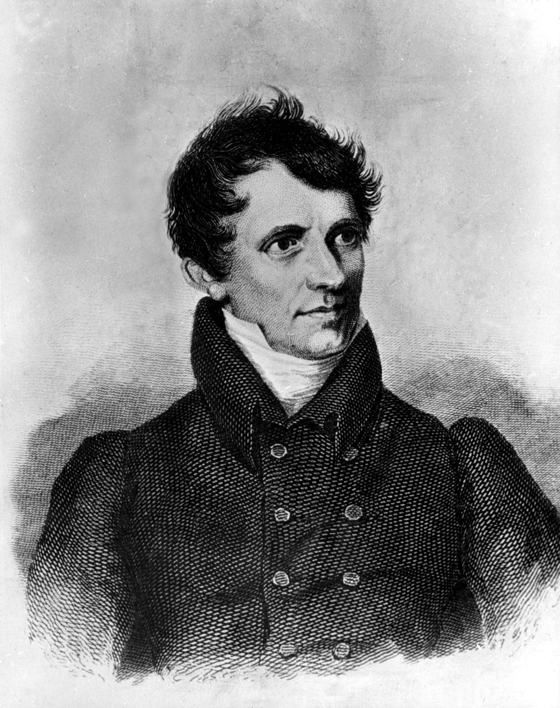

James Fenimore Cooper
James Fenimore Cooper (Burlington, New Jersey, 1789. szeptember 15. – Cooperstown, New York, 1851. szeptember 14.) a korai 19. század egyik legnépszerűbb és legtermékenyebb amerikai írója. Élete William és Elizabeth Cooper tizenkettedik, utolsó előtti gyermekeként született (testvérei közül legtöbben meghaltak gyermekkorukban). Amikor egy éves volt, a család Otsego Lake-ben telepedett le (New York államban, ami akkoriban határvidék volt). Később ebből lett a modern kori Cooperstown. Apja bíró volt és a kongresszus tagja. James Albanybe és New Havenbe járt iskolába, majd a Yale College-ba 1803–1805 között mint a legfiatalabb tanuló. Onnan azonban kizárták veszélyes csínytevései (ezek között robbantás is szerepelt), valamint étel eltulajdonítása miatt.[1] Három évvel később belépett az Amerikai Egyesült Államok Haditengerészetébe, azonban egy-két tengeri út után, mely csak némi tapasztalatszerzésre volt jó, és arra, hogy meglegyen a hadnagyi kinevezése, feleségül vette Susan Augusta de Lancey-t. Az esküvő Mamaroneckben, 1811 Újév napján volt. Ekkor lemondott tiszti rangjáról, azonban a házassággal igen előkelő családba került. Apja 1809-ben halt meg, amikor James 20 éves volt. Az örökség, amit fiára hagyott, James egész életét meghatározta. Cooper regényeinek mintegy fele a határvidék életével foglalkozik. A Bőrharisnya című műben apját Marmaduke Temple bíró személyében ábrázolja. Egy nappal 62. születésnapja előtt, Cooperstownban hunyt el.
A Bőrharisnya-sorozat részei (cselekmény szerinti sorrendben):

A Bőrharisnya-sorozat (eredeti angol címén Leatherstocking Tales) James Fenimore Cooper kalandregény-sorozata, amelyet 1823-tól 1841-ig írt. Öt részből áll: Vadölő (1841), Az utolsó mohikán (1826), Nyomkereső (1840), Bőrharisnya (1823), A préri (1827). Magyarországon az öt regényt a Móra Könyvkiadó egybekötve, Nagy indiánkönyv címen is kiadta. A művek születése J. F. Cooper nem sorrendben írta meg a regényeket. 1823-ban írta meg a Bőrharisnyát. Az utolsó mohikán című regénye, ami a ciklus időrendje szerint a második, 1826-ban jelent meg. Egy évvel később keletkezett A préri. Ezután több mint egy évtizedig nem készült további regény. 1840-ben az időrend szerint harmadik Nyomkereső. Az időrendben első Vadölő utolsóként készült el. Az öt regényt együttesen Bőrharisnya-sorozat néven ismerik. Érdekességek Cooper a sorozatot apja hatására írta. Apját Marmaduke Temple bíró szerepében ábrázolja. Sokan hajlamosak elfeledkezni róla, hogy ezek, mint a korábbi magyar kiadások zöme is, az ifjúságnak szánt átdolgozások. A Bőrharisnya-történetekből modern és teljes fordítás csak napjainkban jelent meg, Az utolsó mohikán. Fontosabb szereplők Nathaniel Bumppo (egyéb nevei: Vadölő, Sólyomszem, Hosszú Puska, Nyomkereső, Bőrharisnya, öreg trapper) - mindegyik regény Csingacsguk (egyéb nevei: Nagy Kígyó, Indián John) - első négy regény
A magyar kiadásokról A hazai kiadások, beleértve a második világháború előttieket is (Garády Viktor, Pallagi Gyula, Mikes Lajos, Honti Rezső és mások munkái), zömmel mind az "ifjúság számára átdolgozott, rövidített" verziók voltak, csak úgy, mint a háború után Réz Ádám ill. Szinnai Tivadar fordításai ill. átdolgozásai. Ez alól, az öt indián történetet illetően, a Hartleben kiadónál (1845) Gondol Dániel fordításában is megjelenő Az utolsó mohikán lett kivétel, amit a modern korban Gy. Horváth László fordításában az eredeti terjedelemben, átdolgozás nélkül is olvashatunk (2019). A másik ilyen Bőrharisnya-történet a Vadölő, amit Vadfogó címmel még Eötvös József fordított le eredeti terjedelmében 1873-ban.
Érdekességek